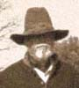
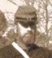
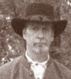

Members of King’s Battery
Listed below is the current King's Battery roster. We are actively seeking new recruits who share our enthusiasm about the Civil War and who desire to experience first-hand what life was like during this monumental time in U.S. history. In the sidebar are questions we’ve encountered — at historical events and other “living history” activities — regarding our avocation. By providing these here, we hope to spark your interest in this rewarding hobby as a living historian of the American Civil War.
|  | Clent Bond is Lieutenant and Commanding Officer of King’s Battery, as well as the unit’s co-founder. |
|  | R.D. Tucker is Sergeant Major and co-founder of King’s Battery. He is also the proprietor of Battery Hill Flag Company, an online retailer of historically correct Civil War and Revolutionary War flags. |
|  | Jeff Moss is Quartermaster Sergeant of King’s Battery (and also provides excellent homemade beef jerky). He joined the unit in December 2005. |